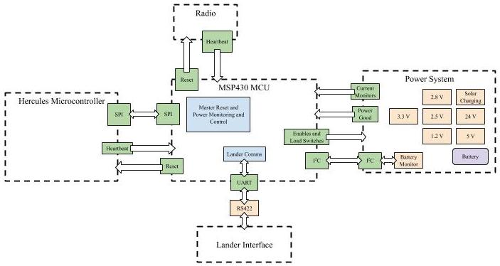
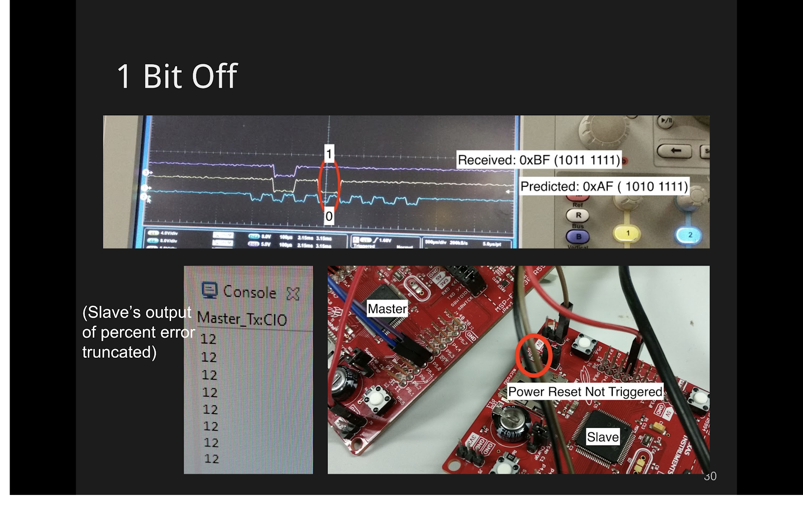

CubeRover: Embedded Systems

Summary
I first explored embedded systems programming through this class
project partnered with the space exploration startup,
Astrobotic. In space, the sun can emit radiation strong enough to flip bits in data and thus corrupt our
entire robot. In the worse case, this can cut all our communications with the robot and end the mission.
As a backup for this situation,I created a "watchdog" to detect this system failure and automatically reset
the robot to hopefully revive communications. I used the
MSP430
as an SPI slave to read heartbeat-like signals and detect anomalies from the robot's main modules.
System Architecture
Learning Embedded Systems
Normally in programming, I expect to see exactly where a variable will be used. When changing status registers to control the MSP430, however, I struggled with the concept of changing a global variable that didn't seem to be used anywhere. I was able to better understand after reading block diagrams of these registers in circuits. Overall, I needed to change the functionality of pins on the MSP430 and choose which internal clock to use.
Serial Peripheral Interface (SPI)
SPI is a form of synchronous communication (main picture at the top), meaning its message bits are aligned with an clock. As my first taste of embedded systems, I struggled with the concept of changing status register bits to control functionality of the chip. I also gained experience reading extensive documentation of software and hardware.
Watchdog: Anomaly Detection
I implemented a basic system to detect anomalies in heartbeat messages sent through SPI. Each hearbeat message contained a series of bytes of a specific order and if a certain percent of these bytes were different than expected, the system would flash an LED to represent switching off and back on power to the robot as a whole. This certainly was not a perfect system, but served as a basic demonstration of future functionality.
Alvin Shek
Robotics Masters Student @ CMU
Robotics, Computer Vision, Deep Learning, Reinforcement Learning.